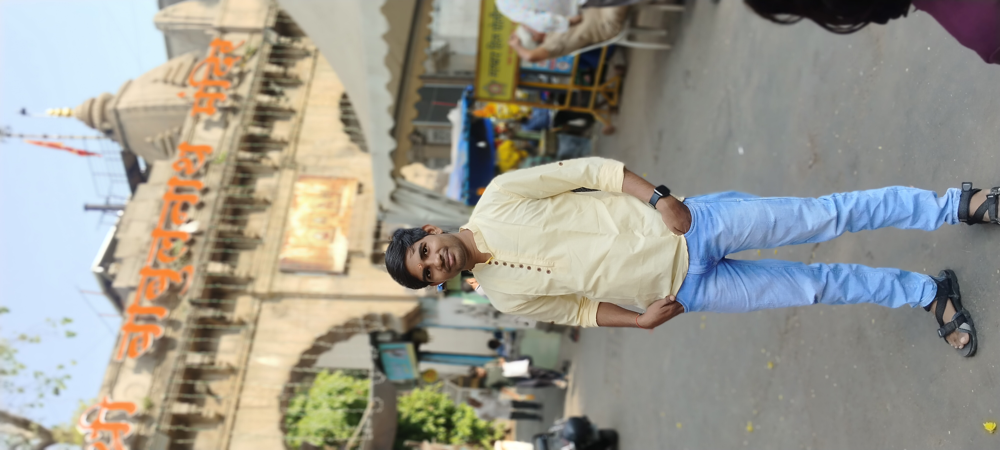
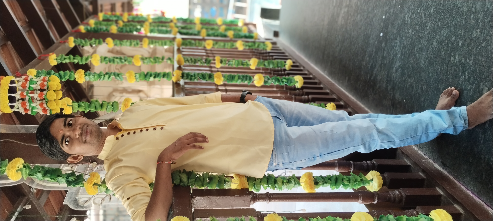
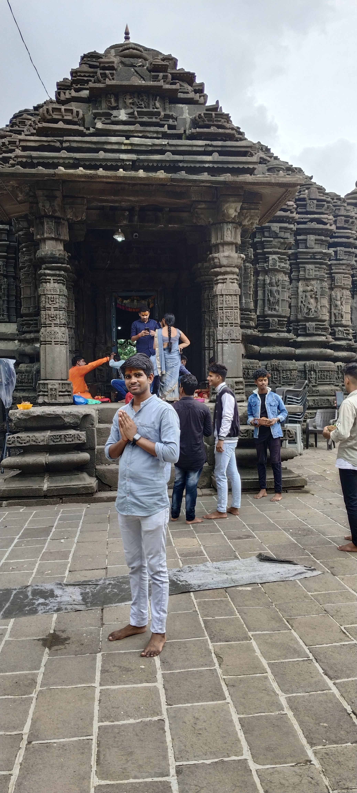
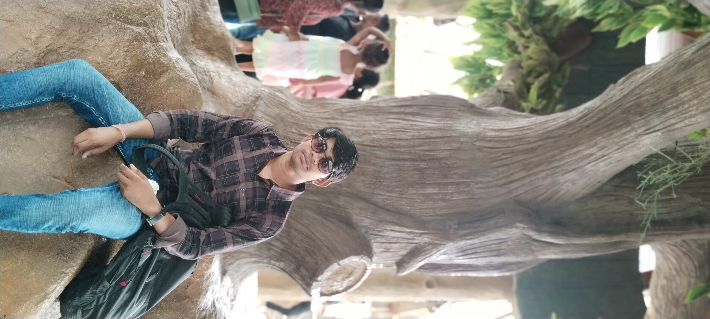
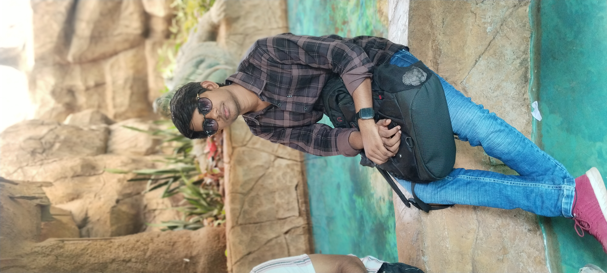
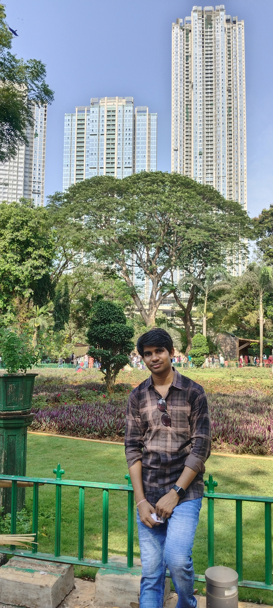
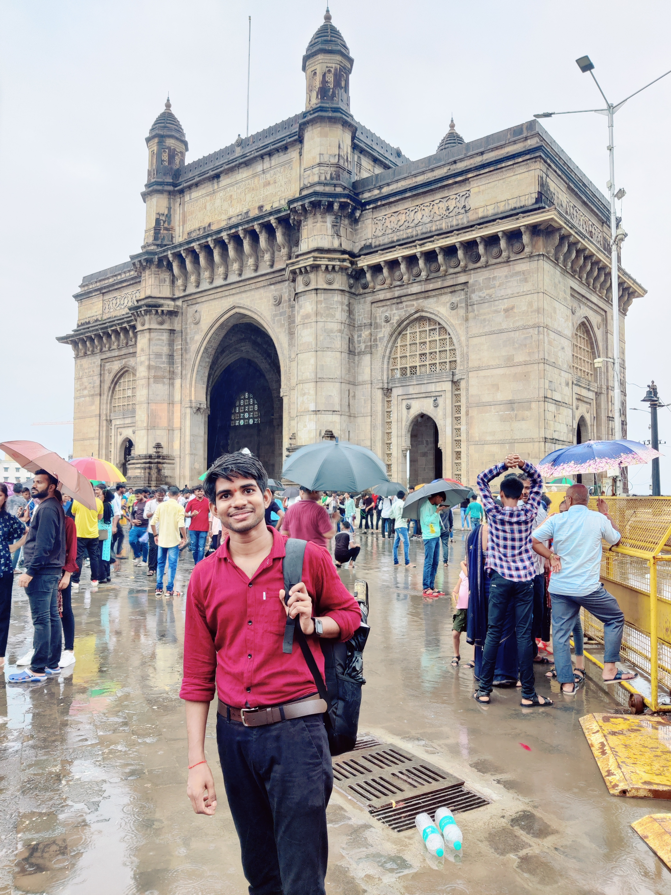

Babun Nath Mahadev Tempel


Educational Programs: this temple is historical place its provede knowledfe of The
12 Jyotirlingas are the most sacred abodes of Lord Shiva in India. Each Jyotirlinga has a unique
mythological story and is said to represent a different aspect of Lord Shiva
Garden: The tempel is set within a beautiful garden featuring a wide range of flora, including exotic plants and trees, making it a serene environment.
Children's Section: A dedicated area for children, where they can interact with smaller animals, making it an educational experience.
Garden: The tempel is set within a beautiful garden featuring a wide range of flora, including exotic plants and trees, making it a serene environment.
Children's Section: A dedicated area for children, where they can interact with smaller animals, making it an educational experience.
Mahabaleshwar Temple

Mahabaleshwar Temple : An ancient temple dedicated to Lord Shiva, it is a
significant pilgrimage site and showcases intricate architecture.
Pratapgad Fort: Built in the 17th century by Chhatrapati Shivaji Maharaj, this fort is located near Mahabaleshwar and is famous for its historical importance and panoramic views..
Points of Interest:Arthur's Seat, Wilson Point, Lingmala Waterfall
Modern Tourism Point:Eco-Tourism, Cultural Events,Accommodation and Amenities
Pratapgad Fort: Built in the 17th century by Chhatrapati Shivaji Maharaj, this fort is located near Mahabaleshwar and is famous for its historical importance and panoramic views..
Points of Interest:Arthur's Seat, Wilson Point, Lingmala Waterfall
Modern Tourism Point:Eco-Tourism, Cultural Events,Accommodation and Amenities
Amber Nath Shiv Tempel

OverView: Ambernath, located in the Thane district of Maharashtra, India, is a town
known for its historical significance and ancient temples. It is particularly famous for the
Ambernath Shiv Temple, an important pilgrimage site.
Historical Significance
Ancient Origins: Ambernath has roots that trace back to ancient times, with archaeological evidence suggesting that the area was inhabited long before the medieval period. The town's name is derived from the local deity, Ambika, and the word "nath," meaning lord. Shiv Temple: The Ambernath Shiv Temple, dating back to the 11th century, is dedicated to Lord Shiva. It is an exquisite example of ancient Indian architecture, featuring intricate carvings and a unique water tank. The temple is constructed in the Hemadpanthi style, characterized by its use of stone without mortar. Historical Events: Over the centuries, Ambernath has witnessed various historical events, including the rule of different dynasties such as the Rashtrakutas, Chalukyas, and later, the Mughals. The temple has been a significant site for worship and cultural gatherings.
Historical Significance
Ancient Origins: Ambernath has roots that trace back to ancient times, with archaeological evidence suggesting that the area was inhabited long before the medieval period. The town's name is derived from the local deity, Ambika, and the word "nath," meaning lord. Shiv Temple: The Ambernath Shiv Temple, dating back to the 11th century, is dedicated to Lord Shiva. It is an exquisite example of ancient Indian architecture, featuring intricate carvings and a unique water tank. The temple is constructed in the Hemadpanthi style, characterized by its use of stone without mortar. Historical Events: Over the centuries, Ambernath has witnessed various historical events, including the rule of different dynasties such as the Rashtrakutas, Chalukyas, and later, the Mughals. The temple has been a significant site for worship and cultural gatherings.
Mumbai Zoo



Botanical Garden: The zoo is set within a beautiful botanical garden featuring a
wide range of flora, including exotic plants and trees, making it a serene environment.
Children's Section: A dedicated area for children, where they can interact with smaller animals, making it an educational experience.
Educational Programs: The zoo conducts various educational programs and workshops aimed at raising awareness about wildlife conservation and the importance of biodiversity.
Accessibility: The zoo is easily accessible via public transportation and is located near other attractions, such as the Dr. Bhau Daji Lad Museum.
Children's Section: A dedicated area for children, where they can interact with smaller animals, making it an educational experience.
Educational Programs: The zoo conducts various educational programs and workshops aimed at raising awareness about wildlife conservation and the importance of biodiversity.
Accessibility: The zoo is easily accessible via public transportation and is located near other attractions, such as the Dr. Bhau Daji Lad Museum.
Gatway Of India & Taj Hotel

Historical Place
Upcomming!!!....
Loading....